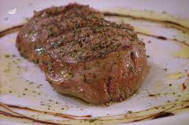

Grilled Fillet

Fillet Meat with rosemary and black pepper
2fillet recipes
- 2 meat fillet
- 1 rosemary stick
- 2 garlic clover
- oil j.e.
- salt and black pepper j.e.
STEPS
-
Take the meat out of the refrigerator at least half an hour before cooking,
otherwise it will be too cold and put in contact with the hot plate will lower the temperature. Dab the meat with kitchen paper, both to eliminate any bone residues, and to eliminate water, which prevents good cooking.
- Wash the rosemary, select the leaves and finely chop them with the crescent on a cutting board
- Peel the garlic and slice it.
- Heat the cast iron plate over a high flame. While it is heating, add a little oil and dry it with kitchen paper.
- When the plate is hot it will begin to emit a slight, barely perceptible smoke. Throw a handful of coarse salt, rosemary and garlic on the plate, then put the meat.
- Leave it to cook for 2-3 minutes, without touching it, so that it can cook well. Keep the flame rather lively. Neither water should appear on the bottom of the plate (temperature too low), nor smoke excessively (temperature too high). In both cases, cooking would be compromised.
If you need to cook several fillets at the same time, get a plate of adequate size to heat over high heat, otherwise cook one at a time.
- After 2-3 minutes, lift a flap of the meat to assess the state of cooking. It must be golden brown and have the classic brown streaks, a sign that cooking has been done correctly. Continue cooking for another 1 minute if it is not golden brown or if you like it well done
- Turn the meat without using tools that can prick it, otherwise the internal juices will escape, to the detriment of softness.
- Cook the meat on the second side as it was done for the first. Sprinkle with more chopped rosemary and a generous grind of black pepper.
- After cooking, put the meat on a plate or in a pan and cover with aluminum foil. Let it rest for a couple of minutes to allow the juices that are concentrated in the center of the fillet to redistribute themselves, helping to make the meat more uniformly soft.
- Put the fillet on the plate and season it with a drizzle of oil and, if you like, a few drops of balsamic vinegar. Garnish with chopped rosemary and serve.
BACK TO HOMEPAGE